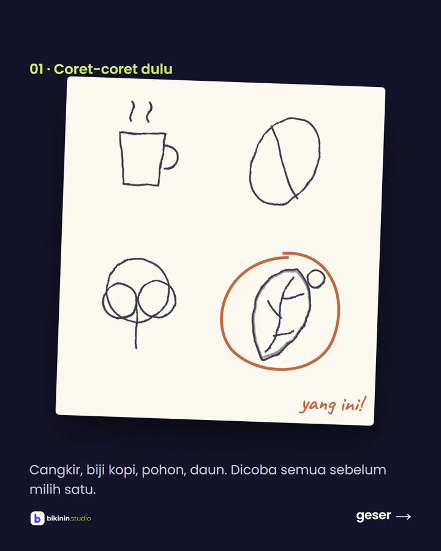
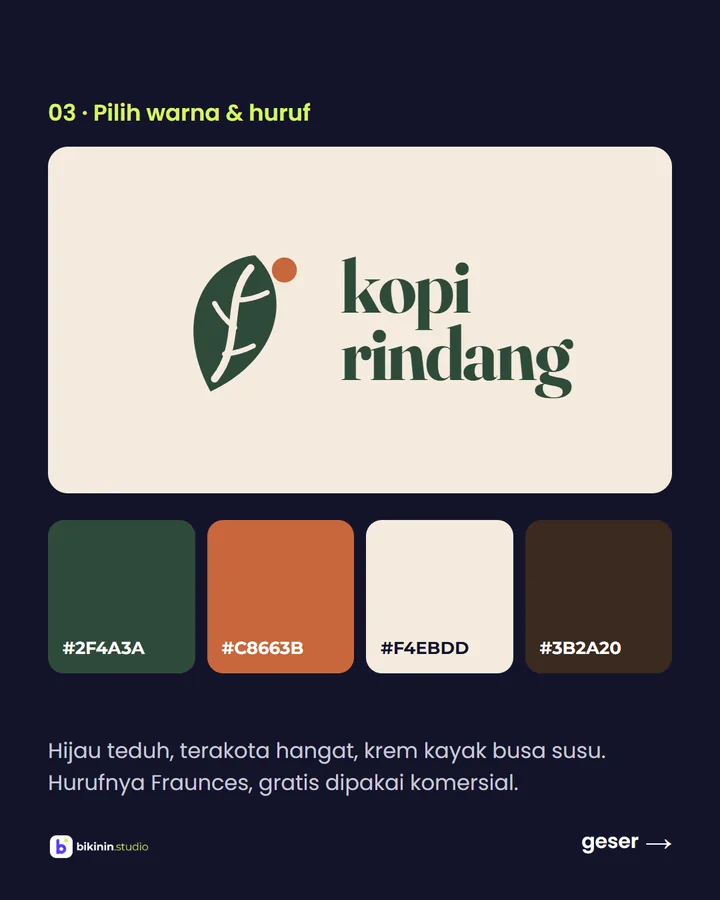

Studi kasus · proyek konsep, brand fiktif
Kopi Rindang: dari coretan sampai aplikasi kasir
Kopi Rindang itu brand fiktif yang kami bikin buat nunjukin cara kerja kami dari awal. Prosesnya sama persis dengan yang bakal kamu alami: brief, konsep, revisi, sampai semua file siap dipakai.
Kedai kecil, suasananya teduh
Bayangkan pemiliknya chat kami begini: "Kedai kopi di Bandung, banyak pohon, pelanggannya mahasiswa yang nugas. Pengen kelihatan hangat, bukan kafe mewah."
Dari situ kami catat tiga kata kunci: teduh, lokal, pelan-pelan. Semua keputusan desain setelahnya harus nyambung ke tiga kata itu.

Daun yang tulangnya belahan biji kopi
Kami coret empat ide: cangkir, biji kopi, pohon, dan daun. Yang dipilih daun, karena bentuknya mirip biji kopi dan langsung bilang "rindang".
Bentuknya dirapikan pakai grid biar seimbang. Warnanya hijau teduh, terakota, dan krem, dengan huruf Fraunces yang hangat (gratis dipakai komersial).
Paket ini: Logo Standard, mulai Rp 200rb


9 post pertama yang senada
Cuma pakai 3 warna dan 2 font, isinya diselang-seling: menu andalan, promo, tips ngopi, testimoni, dan suasana kedai. Hasilnya feed yang langsung dikenali sebagai Kopi Rindang.
Paket ini: Paket 10 feed, mulai Rp 120rb
Lihat feed lengkapnya →
Satu halaman: menu, promo, lokasi
Link di bio Instagram diarahkan ke halaman ini. Pembeli bisa lihat menu dan harga, promo hari Jumat, jam buka, lalu langsung pesan antar lewat WhatsApp.
Paket ini: Landing page, mulai Rp 400rb
Buka demo landing page →
Kasir di HP, laporan omzet otomatis
Tap menu, bayar tunai atau QRIS, struk keluar, dan omzet harian langsung kecatat. Bisa di-install di HP dan tetap jalan walau sinyal putus.
Paket ini: Aplikasi sederhana, mulai Rp 3jt
Coba aplikasi kasirnya →
Kalau ini usahamu, mulai dari mana?
Nggak harus sekaligus. Kebanyakan usaha mulai dari logo dan feed dulu, baru lanjut ke web atau aplikasi kalau udah butuh.
- Logo Standardmulai Rp 200rb
- Paket 10 feedmulai Rp 120rb
- Landing pagemulai Rp 400rb
- Aplikasi kasirmulai Rp 3jt